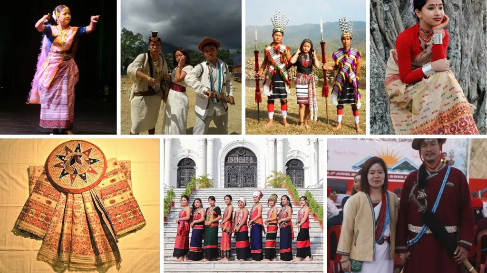
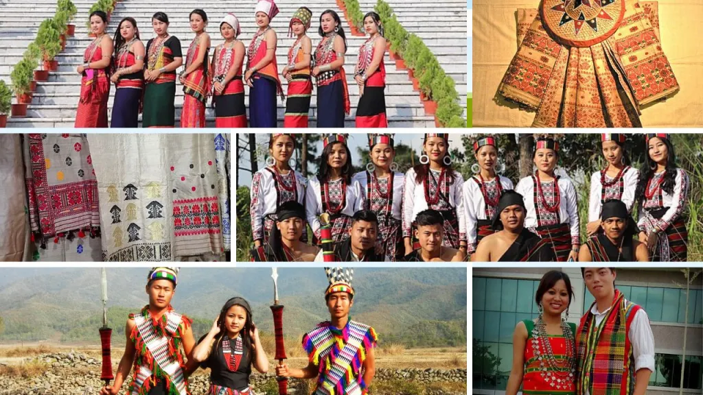

India, often referred to as the land of diversity, is a country known for its rich and varied culture. Within this vast nation lies the enchanting region of North East India, a land of breathtaking landscapes, diverse communities, and a cultural mosaic that is as intricate as it is captivating.
One of the most distinctive aspects of this region’s cultural tapestry is the traditional attire worn by its people.
These traditional dresses are not just garments, they are living embodiments of centuries-old traditions, carrying with them stories of heritage, identity, and artistry.
North East India, consisting of eight states—Arunachal Pradesh, Assam, Manipur, Meghalaya, Mizoram, Nagaland, and Tripura and the “brother” state Sikkim —offers a treasure trove of traditional dresses, each a testament to the unique customs, beliefs, and lifestyles of the indigenous communities that call this region home.
From the elegance of Assamese Muga silk sador to the vibrant tribal attire of the Naga tribes, each state’s traditional dress reflects a piece of the cultural puzzle that is North East India.
Each state in North East India boasts a unique and colourful array of traditional dresses, reflecting the rich diversity and ethnicity of the region.
In this article, we embark on a fascinating journey to explore the vibrant traditional dresses of North East India.
A Journey through Diversity
The traditional dresses of North East India serve as a fascinating window into the region’s diversity. Each state boasts its own distinctive styles, colours, and motifs, making it a cultural kaleidoscope waiting to be explored.
These dresses are more than just clothing, they are living, breathing symbols of identity and belonging.
Assamese Elegance: Muga Silk Mekhela Sador and More
Assam, known for its picturesque landscapes and vibrant culture, is home to some of the most elegant traditional dresses in North East India.
One of the standout elements of Assamese attire is the Muga silk mekhela sador. Muga silk, exclusive to Assam, is celebrated for its natural golden luster and exceptional quality.
The Muga silk mekhela sador is more than just a piece of clothing, it’s a symbol of grace and sophistication.
Women in Assam often wear these exquisite mekhela sador on special occasions and festivals, and it’s not uncommon for these heirloom mekhela sador to be passed down through generations. In addition to the Muga silk mekhela sador, Assam also boasts the traditional mekhela Sador. This two-piece attire consists of a skirt-like lower garment (mekhela) and an upper cloth (sador).
What sets these dresses apart are their vibrant colors and intricate designs, which vary based on the region and community. Each mekhela sador tells a story, reflecting the heritage and artistry of Assamese weavers.
Manipuri Magic: Phanek and Innaphi
Manipur, often called the “Jewel of India,” is known for its unique cultural heritage, and this is beautifully reflected in its traditional dresses.
Manipuri women are often seen wearing the phanek and innaphi. The phanek is a wrap- around skirt that’s both elegant and comfortable, making it suitable for Manipur’s tropical climate. The innaphi, a shawl-like garment, complements the phanek, adding to the overall charm of the attire.
What makes these dresses special is not just their design but also the cultural symbolism they carry.
The colours and patterns of the phanek and innaphi are often inspired by nature and represent various elements of Manipuri life.
Wearing these dresses is not just a fashion choice, it’s a cultural statement, an affirmation of identity, and a celebration of tradition.
Naga Pride: Tribal Attire Dresses of North East India
The Naga tribes of Nagaland and neighbouring states boast a rich heritage of tribal attire that is as diverse as the tribes themselves.
Each Naga tribe has its own unique style of dressing, with distinctive patterns, colours, and accessories.
The Naga shawls, in particular, are highly regarded for their intricate designs and vibrant hues.
Naga traditional attire goes far beyond clothing, it’s a reflection of identity and pride. These garments often feature motifs that tell stories of their culture and traditions, making them a fascinating subject of study and admiration.
Whether it’s the striking black and red shawls of the Angamis or the colorful accessories of the Konyaks, Naga attire is a visual testament to the cultural diversity of the region.
Meghalaya’s Jymphong and Jainsem: A Weave of Tradition
Meghalaya, a northeastern state of India, is a land of picturesque landscapes, lush greenery, and diverse cultures.
The state is home to several indigenous tribes, each with its distinct traditions, languages, and, of course, traditional attire. The captivating world of Meghalaya’s traditional dress, which reflects the rich cultural tapestry of this enchanting region.
Khasi Traditional Dress:
Male Attire:
Khasi men typically wear a traditional garment called “Jymphong,” which resembles a long knee-length sleeveless tunic. It is often white or cream in color and may be adorned with intricate embroidery.
The “Kynjri Ksiar” is an essential accessory, a white turban-like headgear with a red border. It signifies a married man. Khasi men may also wear “Dhara,” a piece of unstitched cloth draped around the waist.
Female Attire:
Khasi women adorn themselves in the “Jainsem,” a two-piece dress consisting of a sleeveless top and a long wrap-around skirt.
The colors and designs of the Jainsem may vary. “Sawak Blai” is a colorful shawl worn over the Jainsem. It is an intricate piece with unique patterns. Women also wear jewelry such as necklaces, earrings, and nose rings.
Garo Traditional Dress:
Male Attire:
Garo men wear the “Dakmanda” or “Gando,” a cloth wrapped around the waist and tied with a belt. They also wear a sleeveless jacket known as the “Riput” and a headgear called the “Chadra.”
Female Attire:
Garo women wear the “Dakmanda” or “Dakdu,” a blouse, and a wrap-around skirt called “Daksari.” The “Ritik” is a traditional jacket, often adorned with intricate embroidery, worn by Garo women.
Jaintia Traditional Dress:
Male Attire:
Jaintia men traditionally wear the “Jymphong,” a long tunic-like garment similar to the Khasi attire. They also wear the “Kyrshah,” a turban or headgear made from cotton cloth.
Female Attire:
Jaintia women wear the “Poho,” a sleeveless top, and the “Jainsem,” a wrap-around skirt. The “Pdur” is a colorful shawl or stole worn by Jaintia women over their attire.
Arunachal Pradesh’s Galo Dresses: A Cultural Heritage
Arunachal Pradesh, the “Land of the Dawn-Lit Mountains,” is home to a multitude of indigenous tribes, each with its own unique traditional attire.
Among these, the Galo tribe is known for its striking Galo dresses. These dresses are a blend of vibrant colors, intricate designs, and cultural heritage.
The Galo women traditionally wear a wrap-around skirt called “gale”, which is paired with a matching blouse.
What makes these dresses remarkable is the use of bold colors and patterns that often represent elements from nature, animals, and tribal legends. Galo dresses are not just garments, they are a reflection of the tribe’s cultural identity and heritage.
Tripura’s Rignai and Risa: Elegance Redefined
In the northeastern state of Tripura, women adorn themselves in Rignai and Risa, a traditional dress ensemble that embodies elegance and sophistication.
The rignai is a handwoven skirt that drapes gracefully, while the risa is an intricately designed blouse. Together, they create an ensemble that exudes timeless beauty.
What sets Tripura’s traditional attire apart is the meticulous craftsmanship involved in creating rignai and risa. The motifs and patterns often incorporate cultural symbols, showcasing the rich heritage of the state.
These dresses are a testament to the artistic skills of Tripura’s weavers and the enduring tradition of handwoven textiles.
Mizoram Puanchei Dresses of North East India
Mizoram, the “Land of the Highlanders,” has a unique and captivating traditional dress known as the Puanchei. This dress holds a special place in the hearts of Mizo women and is often worn during cultural events and celebrations.
The Puanchei is characterized by its vibrant colors and intricate designs, which are painstakingly handwoven.
What makes it even more special is the fact that it’s often passed down through generations, symbolizing continuity and tradition.
The Puanchei is more than just attire, it’s a cultural symbol that reflects the pride and identity of the Mizo people.
Sikkim Bakhu and Kho
Our exploration of North East India’s traditional dresses now takes us to the picturesque state of Sikkim. Here, the Bakhu and Kho form the traditional attire, and they are a sight to behold.
The Bakhu is a beautifully draped gown, and the Kho is an intricately woven jacket. Together, they create an ensemble that is both elegant and practical, suitable for Sikkim’s mountainous terrain.
What’s remarkable about the Bakhu and Kho is not just their design but also the cultural significance they hold.
The colors, motifs, and intricate embroidery tell stories of Sikkim’s heritage and traditions. These dresses are worn with pride during festivals, ceremonies, and special occasions, making them an integral part of Sikkimese culture.
The traditional dresses of North East India are more than just clothing, they are living embodiments of culture, tradition, and identity. Each state’s attire reflects the unique customs and beliefs of its indigenous communities.
These dresses are a testament to the enduring heritage of North East India, and they continue to be a source of pride and celebration for the people of the region.
In Conclusion
Exploring the traditional dresses of North East India is not just a journey through clothing, it’s a journey through culture, heritage, and identity.
Each state in the region has its own unique story to tell through its traditional attire, and these dresses are a testament to the rich and diverse cultures that make up North East India.
As we wrap up our journey, we invite you to delve deeper into the world of North East Indian traditional dresses.
Explore the colors, patterns, and stories behind these garments, and you’ll gain a deeper appreciation for the cultural diversity of this enchanting region.
So, why wait? Take a step into the world of North East Indian traditional dresses and embark on a cultural journey like no other.